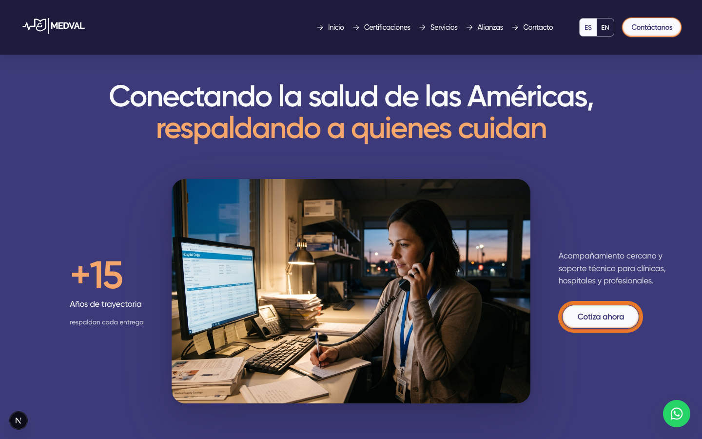
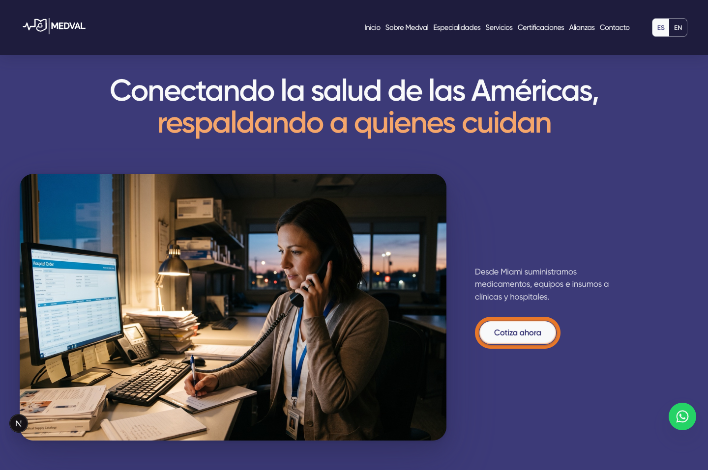
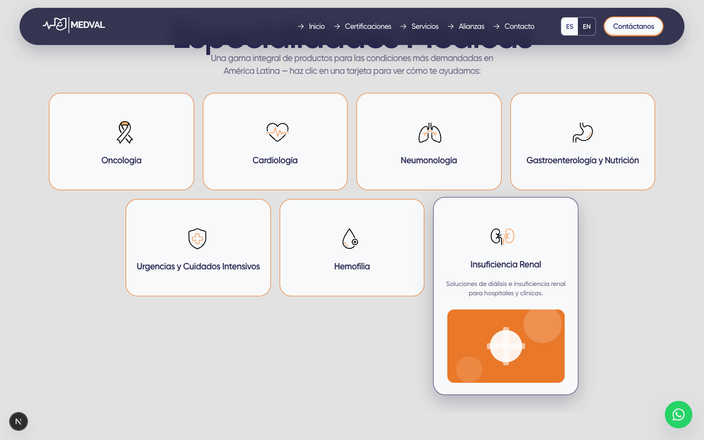
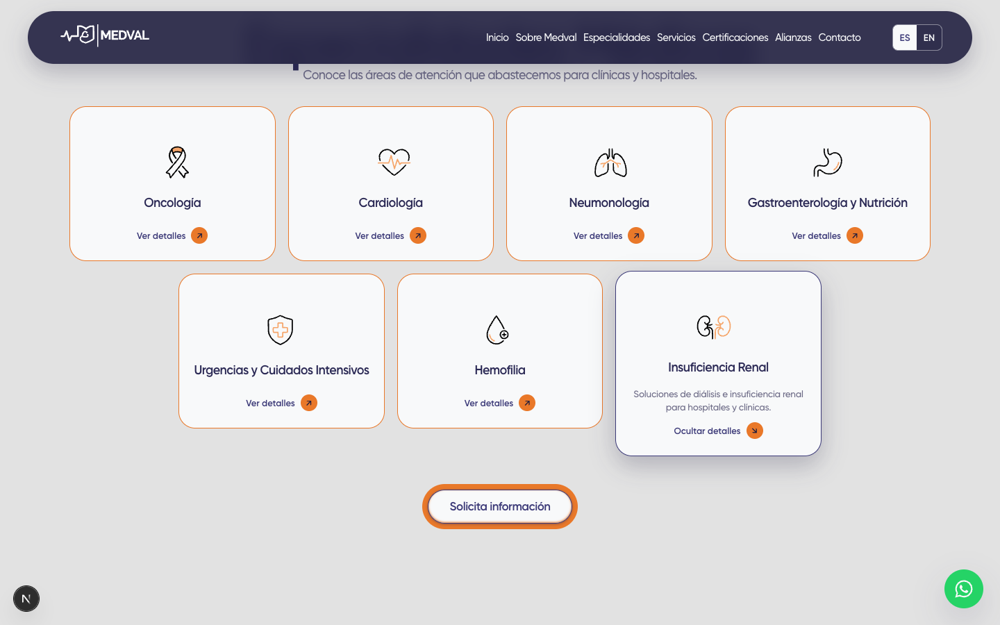
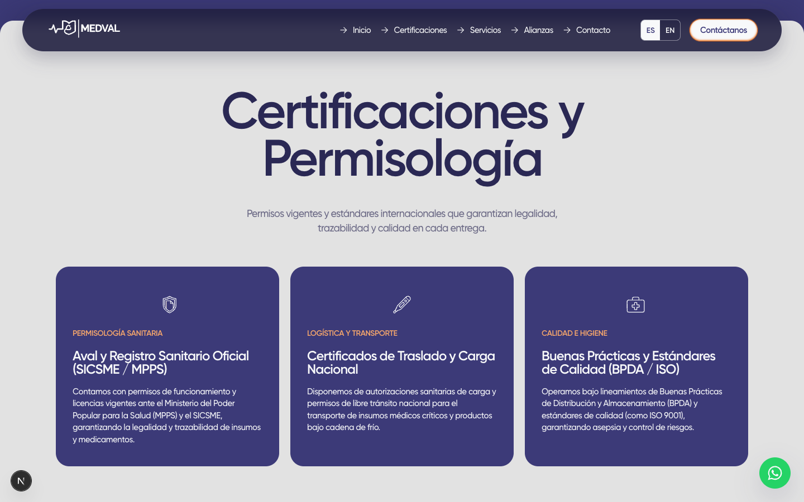
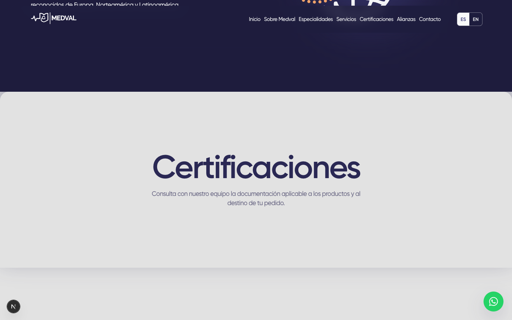
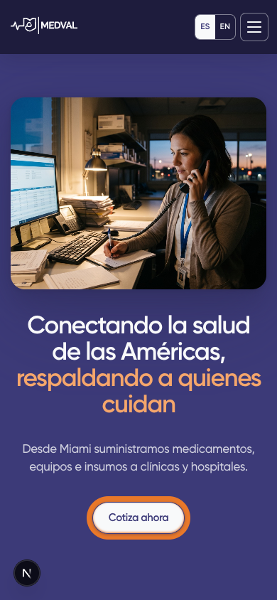

ANTES · commit 475b3ec
16 oct 2026 · 22:52:58 VET (autor y commit).
Última ejecución de despliegue de producción registrada: commit 475b3ec, iniciada el 16 oct · 22:53:09 VET, exitosa.
Comparación auditable · solicitud #164
Corte solicitado:
martes 20 de octubre de 2026, 13:00:00 de Venezuela (UTC−04). El último
commit de la rama de trabajo fix/home-story-flow anterior a ese corte es
475b3ec. El release posterior es fba4766.
16 oct 2026 · 22:52:58 VET (autor y commit).
Última ejecución de despliegue de producción registrada: commit 475b3ec, iniciada el 16 oct · 22:53:09 VET, exitosa.
20 oct 2026 · 17:37:31 VET (autor y commit; merge del PR #167).
Despliegue de staging: commit fba4766, iniciado el 20 oct · 17:37:35 VET, exitoso. No es un despliegue de producción.
/es/int, Chromium,
movimiento reducido y viewport de 1440×900 (móvil 390×844). No se
presentan como capturas directas de los servidores. Se tomaron el
21 oct 2026 entre 14:27 y 14:29 VET. Las imágenes PNG no están retocadas;
haz clic en cada una para verla a resolución original. Las portadas renderizadas pueden
tener distinta altura (antes 900 px, después 957 px) aun con el mismo viewport. El pequeño
indicador «N» es del servidor Next.js local y aparece en ambas versiones.
16 oct, 22:52:58 VET · 1440 px de ancho

20 oct, 17:37:31 VET · 1440 px de ancho

No es una foto nueva: la portada usa el mismo archivo
public/impilo/home/hero/hero-we-care.jpg en ambos commits (blob Git
c15a8f35c3b831fc87cf01be31118ba47db520a6). La foto se incorporó en
2d6a2ca, el
14 oct 2026 · 17:19:47 VET, antes del corte. Lo que sí cambió es el
encuadre en el diseño.
Desplázate dentro de cada columna o abre cada PNG original. La altura real difiere: antes 12.069 px; después 11.204 px.
Certificaciones → servicios → especialidades → productos → alianzas → contacto.
Sobre Medval → especialidades/productos → servicios → certificaciones/alianzas → contacto.
La séptima tarjeta muestra una foto provisional naranja tomada de
/api/media/file/medval-services-1-480x300.png.

Se quitó la foto provisional de todas las tarjetas. Quedan iconos coherentes y «Ver/Ocultar detalles». No se añadieron siete fotos nuevas.

Tres tarjetas con SICSME/MPPS, carga nacional y BPDA/ISO.

Sección separada «Certificaciones» con texto neutro y sin tarjetas. Las acreditaciones verificadas de Miami siguen pendientes (#164/12).


| Elemento | ANTES · 475b3ec | DESPUÉS · fba4766 |
|---|---|---|
| Menú | Inicio, Certificaciones, Servicios, Alianzas, Contacto. | Inicio, Sobre Medval, Especialidades, Servicios, Certificaciones, Alianzas, Contacto. |
| Empresa | «¿Qué es Medval?»; un párrafo largo. | «Sobre Medval»; tres párrafos breves. |
| Apoyo del primer mensaje de portada | «Acompañamiento cercano y soporte técnico para clínicas, hospitales y profesionales.» | «Desde Miami suministramos medicamentos, equipos e insumos a clínicas y hospitales.» |
| Cifras | +15 en portada, las tres cifras en empresa y de nuevo en contacto. | +15, +20 y +500 solo en «Sobre Medval». |
| Productos | «Soluciones de alta calidad y servicio excepcional.»; marca propia dentro de un párrafo. | «Medicamentos, equipos e insumos para quienes cuidan.»; bloque aparte «Nuestra marca propia». |
| CTA principales | «Contáctanos» en cabecera, después de servicios y en el cierre; «Cotiza ahora» en portada. | «Cotiza ahora» en portada, «Solicita información» tras especialidades y «Hablemos» al cierre. |
| Alianzas | «Alianzas y Casos de Éxito», sin caso real documentado. | «Alianzas»; se retiró el bloque de caso no documentado. |
| Cierre | «¿Listo para dar el siguiente paso hacia una atención médica superior?» | «¿Tu institución necesita medicamentos, equipos o insumos? Cuéntanos qué buscas.» |
| Formulario | El honeypot contiene «No llenar este campo». |
El honeypot sigue funcionando, pero está oculto con hidden y CSS.
|
git log -1 --before='2026-10-20 13:00:00 -0400' fix/home-story-flow git diff --stat 475b3ec fba4766 git rev-parse 475b3ec:public/impilo/home/hero/hero-we-care.jpg git rev-parse fba4766:public/impilo/home/hero/hero-we-care.jpg # ejecutar desde docs/comparaciones/164/ shasum -a 256 -c SHA256SUMS.txt
El diff entre los dos árboles tiene
14 archivos: 410 líneas añadidas y 638 eliminadas. Las 10 capturas PNG
brutas están junto a este HTML; sus hashes están en
SHA256SUMS.txt y el método reproducible en
capture.mjs. El corte de main aislado habría dado
d195aeb (7 oct), porque 475b3ec todavía era una rama de trabajo;
elegimos esta última porque es el commit pertinente y el último despliegue de producción
registrado.